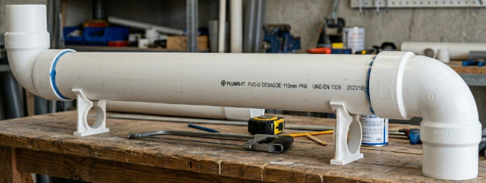
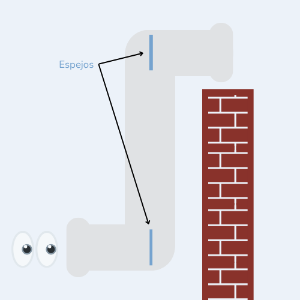
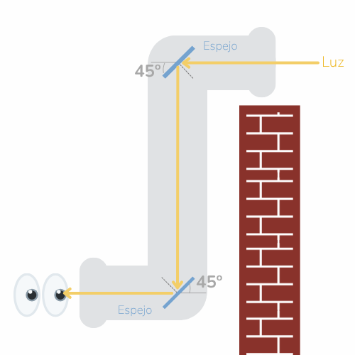
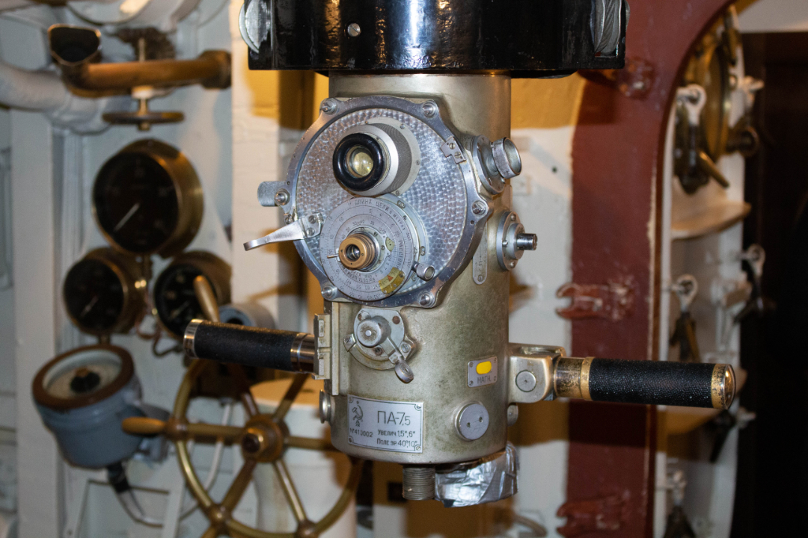
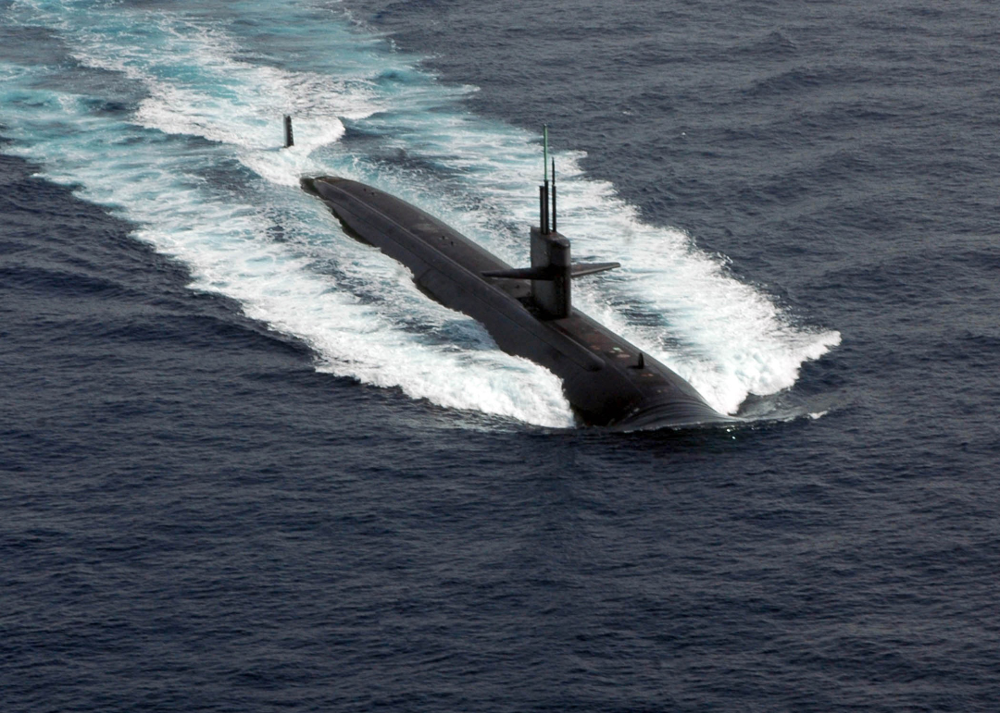

🧱 Explora más allá del muro
| Imagina que eres un explorador y te encuentras frente a un muro muy alto que no puedes escalar. Como quieres saber qué hay al otro lado, tu misión será diseñar un dispositivo que te permita ver más allá del muro utilizando la reflexión de la luz. |
🛠️ Material disponible
Para diseñar este dispositivo cuentas con:
- 2 espejos planos pequeños
- Un tubo con una abertura superior y otra inferior, en lados opuestos, como muestra la imagen.

🔍 Tu reto
|
Tu tarea consiste en decidir la orientación de los espejos para que un rayo de luz:
 Tu tareas es decidir el ángulo de inclinación de los espejos planos ✏️ Para hacerlo: 1️⃣ Dibuja la orientación de los dos espejos en las posiciones indicadas. 2️⃣ Traza el recorrido del rayo de luz desde que entra al dispositivo hasta que llega al ojo. 3️⃣ Dibuja la normal en cada punto donde el rayo incide en un espejo (la línea perpendicular a la superficie). 4️⃣ Comprueba la ley de la reflexión: asegúrate de que en cada reflexión se cumpla: ángulo de incidencia = ángulo de reflexión 📝 Recuerda: Los ángulos de incidencia y de reflexión siempre se miden respecto a la normal, no respecto al espejo. |
✅ Comprueba tu idea
Para verificar si tu propuesta funciona, puedes:
- Colocar dos espejos planos reales con la orientación que dibujaste.
- Iluminar uno de ellos con un puntero láser.
- Observa si la luz se refleja primero en un espejo, luego en el otro y finalmente sale en la dirección del ojo del observador.
También puedes usar Algodoo para simular el recorrido del rayo.
🧠 Responde y explica
- ¿Cómo orientaste los espejos?
- ¿Cómo cambió de dirección el rayo en cada reflexión?
- ¿Por qué este dispositivo permite ver lo que hay al otro lado del muro sin necesidad de elevar la vista por encima de él?
👀 Si ya respondiste el acertijo…
💡¿Qué debería ocurrir?
Una orientación posible, y muy eficiente, es colocar cada espejo aproximadamente a 45° respecto a la dirección del tubo. De este modo, la luz entra por la abertura superior, se refleja en el primer espejo y cambia de dirección hacia el segundo; luego, vuelve a reflejarse y llega finalmente al ojo del observador.

El rayo sigue una trayectoria en forma de “Z”, lo que permite ver lo que hay al otro lado del muro.
🌍 En la vida real
El dispositivo que acabas de diseñar recibe un nombre especial: periscopio.

Aunque es conocido por su uso en submarinos y puestos de observación, este principio también se aplica en la medicina. Algunos instrumentos, como endoscopios y laringoscopios, utilizan sistemas de reflexión para permitir observar zonas del cuerpo que no están en línea directa de visión.

Todo esto es posible porque la luz viaja en línea recta y cambia de dirección al reflejarse, siguiendo siempre la ley de la reflexión.